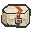

原尺寸浮体固定嵌入底部凹舱，落地与水中工作使用同一外形。
数量与载重是规则参考输入，三维只展示所选节点的一件浮体；其余部件未画出。水面用于装配观察，不能预测平衡吃水。
前半剖开仅便于看内部；关闭后可观察正常主体与底部开口。浮体始终保留，不按active变形。
绿色虚线为原碰撞盒，浅色为浮体，铜色为束带。蓝色水线是参考位置，不是物理验收。

底部浮体需要配套更宽的凹舱主体显示变体，安装预览和已安装状态一致。弹簧凹舱宽度不足，不能直接复用它来容纳浮体。
现有水中被动浮力由机械主体有效WATER高度与总载重决定，关闭整机或没有电量仍可生效；空气、岩浆和超载不提供浮力。不会按浮体外观的浸水体积重新计算。
本包仅制作结构美术。主体变体、六向实际安装、复杂地形、侧倾切换和真实水下／骑乘仍需后续接入验证。
Blender 可编辑工程 · Blockbench 浮体源稿 · 凹舱主体源稿 · 结构说明 · 实际几何验证
结构方案已获用户采用。原件、安装节点、碰撞、浮力规则与生产资源保持；这不是实机或平衡水位模拟。